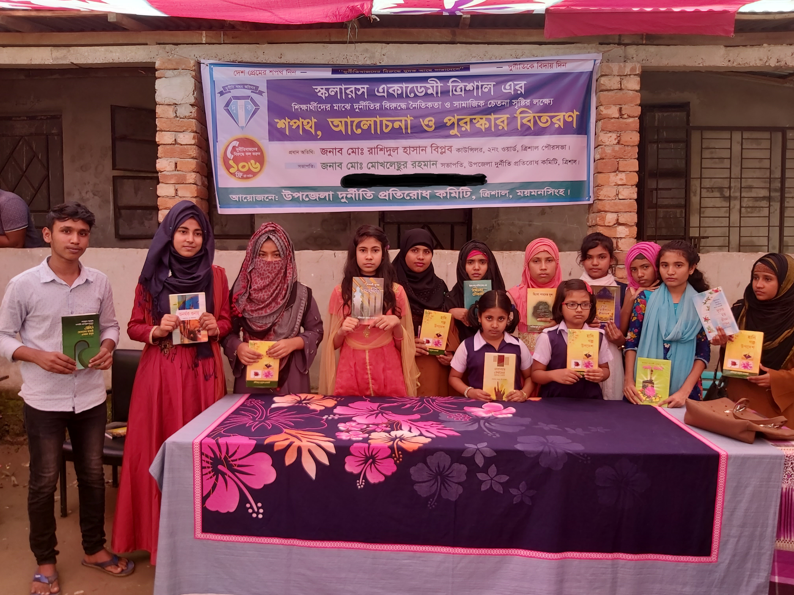
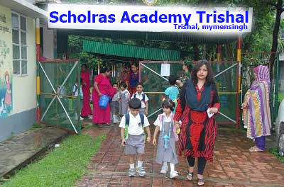
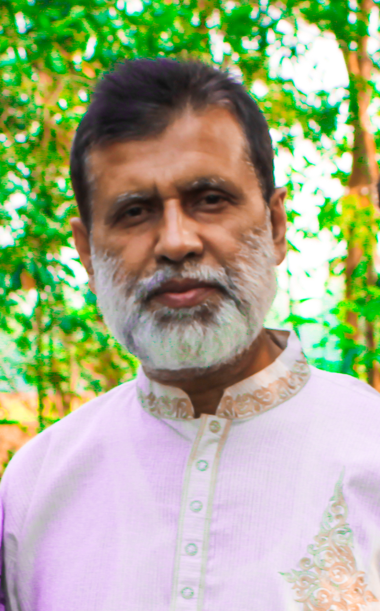

Scholars Academy Trishal
Trishal,Mymensing
পড় তোমার প্রভুর নামে
 
স্কুল পরিচিতি :
স্কলারস একাডেমি , স্থাপিত হয় ২০০৯ সালে । স্কুলটি ময়মসিংহ বিভাগের , ত্রিশাল উপজেলার ,২নং অয়ার্ড এ অবস্থিত । স্কুলটির পরিচালক , মোঃ শামছুল হুদা।
স্কুলের বৈশিষ্ট্য :
- অভিজ্ঞ শিক্ষক -শিক্ষিকা দ্বারা সকল ছাত্র-ছাত্রীদের সহযত্নে পাঠদান দেওয়া।
- সাপ্তাহিক ও মাসিক পরিক্ষার আয়োজন করা হয়।
- দুর্বল ছাত্র-ছাত্রীদের দিকে বিশেষ নজর দেওয়া হয়।
- হাতের লেখা সুন্দর করার জন্য আলাদা ক্লাস নেওয়া হয়।
- প্রতি মাসে অভিভাবকদের নিয়ে সমাবেশ এর আয়োজন করা হয় ।
- গরিব ও মেধাবি ছাত্র-ছাত্রীদের বিনামূল্যে পাঠদান দেওয়া হয়।
- অভিজ্ঞ শিক্ষক -শিক্ষিকা দ্বারা সকল ছাত্র-ছাত্রীদের সহযত্নে পাঠদান দেওয়া।
- সাপ্তাহিক ও মাসিক পরিক্ষার আয়োজন করা হয়।
- দুর্বল ছাত্র-ছাত্রীদের দিকে বিশেষ নজর দেওয়া হয়।
- হাতের লেখা সুন্দর করার জন্য আলাদা ক্লাস নেওয়া হয়।
- প্রতি মাসে অভিভাবকদের নিয়ে সমাবেশ এর আয়োজন করা হয় ।
- গরিব ও মেধাবি ছাত্র-ছাত্রীদের বিনামূল্যে পাঠদান দেওয়া হয়।

মোঃ শামছুল হুদা(পরিচালক)